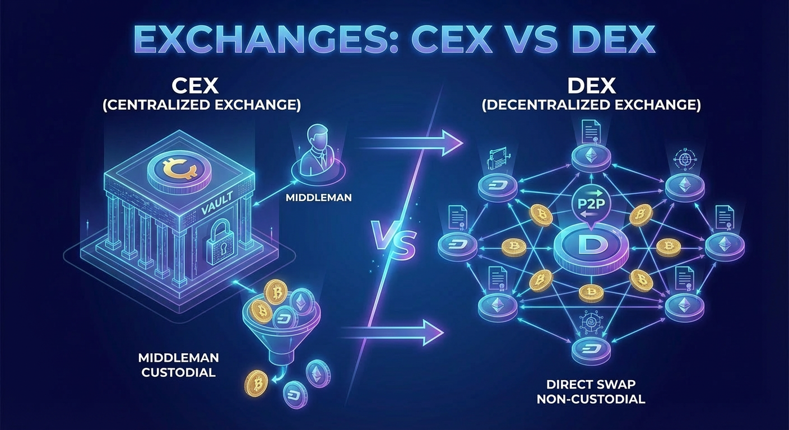

Τα crypto exchanges χωρίζονται σε δύο βασικές κατηγορίες: κεντρικοποιημένα (CEX) και αποκεντρωμένα (DEX). Το καθένα έχει διαφορετική φιλοσοφία, δομή και ρίσκο.

Ένα Centralized Exchange (CEX) είναι μια πλατφόρμα που λειτουργεί σαν παραδοσιακό χρηματιστήριο — μια εταιρεία διαχειρίζεται τα κεφάλαιά σου, εκτελεί τις συναλλαγές και τηρεί τα αρχεία. Παραδείγματα: Binance, Coinbase, Kraken.
Ένα Decentralized Exchange (DEX) λειτουργεί μέσω smart contracts απευθείας στο blockchain — χωρίς ενδιάμεσο. Εσύ κρατάς πάντα τα κλειδιά του wallet σου. Παραδείγματα: Uniswap, dYdX, Jupiter.
Η βασική διαφορά είναι ποιος ελέγχει τα κεφάλαια κατά τη διάρκεια μιας συναλλαγής:
CEX: καταθέτεις crypto στο exchange, το οποίο το κρατάει για λογαριασμό σου.
CEX: οι συναλλαγές γίνονται στο εσωτερικό σύστημα του exchange (off-chain).
DEX: το wallet σου συνδέεται απευθείας με το protocol.
DEX: κάθε swap εκτελείται ως on-chain συναλλαγή μέσω smart contract.
Στο CEX ο έλεγχος είναι κεντρικός. Στο DEX παραμένει πάντα στον χρήστη.
Συνδέεσαι στο CEX ή συνδέεις το wallet σου στο DEX.
Επιλέγεις το ζεύγος ανταλλαγής (π.χ. BTC/USDT).
Ορίζεις ποσό και τύπο εντολής (market, limit κ.ά.).
CEX: η εντολή ταιριάζει με αντίστοιχη στο order book. DEX: το smart contract εκτελεί το swap.
Η συναλλαγή επιβεβαιώνεται — στο CEX άμεσα, στο DEX μετά από on-chain επιβεβαίωση.
Το υπόλοιπό σου ενημερώνεται.
Custody σημαίνει ποιος κρατάει τα private keys — δηλαδή ποιος ελέγχει πραγματικά τα κρυπτονομίσματά σου. Στο CEX τα κλειδιά ανήκουν στην εταιρεία (custodial). Στο DEX τα κλειδιά ανήκουν πάντα σε εσένα (non-custodial). «Not your keys, not your coins.»
Τα CEX χρεώνουν συνήθως maker/taker fees (0.1%–0.5%) καθώς και κόστος ανάληψης. Τα DEX χρεώνουν gas fees (κόστος δικτύου) και swap fees του protocol (συνήθως 0.05%–0.3% ανά ανταλλαγή).
Tip: Σε περιόδους συμφόρησης δικτύου, τα gas fees ενός DEX μπορεί να ξεπεράσουν κατά πολύ τα trading fees ενός CEX.
Το ρίσκο είναι διαφορετικό στις δύο περιπτώσεις — και πρέπει να το κατανοείς πριν επιλέξεις.
Εάν χρεοκοπήσει ή παραβιαστεί το exchange, τα κεφάλαιά σου κινδυνεύουν. Ιστορικά παραδείγματα: Mt. Gox, FTX.
Το ρίσκο είναι στο smart contract — αν υπάρχει bug, μπορεί να εκμεταλλευτεί κάποιος. Εσύ όμως δεν χάνεις κεφάλαια από πτώχευση τρίτου.
Binance — το μεγαλύτερο exchange παγκοσμίως σε όγκο.
Coinbase — δημοφιλές στις ΗΠΑ, ρυθμιζόμενο.
Uniswap — το πιο γνωστό DEX στο Ethereum.
Jupiter — κορυφαίο DEX aggregator στο Solana.
Δεν υπάρχει «σωστή» επιλογή — εξαρτάται από τις ανάγκες σου. Τα CEX προσφέρουν άνεση, τα DEX προσφέρουν αυτονομία. Οι περισσότεροι έμπειροι χρήστες χρησιμοποιούν και τα δύο.